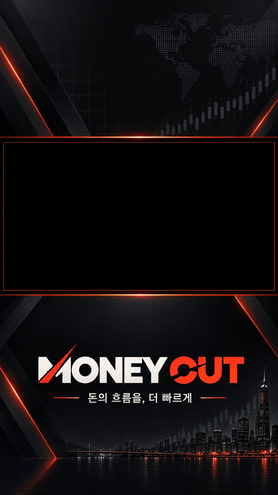

MONEY CUT / WORKSPACE
Drive 폴더 ↗제작 대시보드
다음 쇼츠를 만드세요
MONEY CUT 프리셋사용 허락을 확인한 소스에서 맥락을 찾고, 후킹 문구를 다듬습니다.
근거가 부족한 카피는 검토 대상으로 보관합니다. 제목·본문·해시태그 TXT가 함께 생성됩니다.
대판 미리보기
9:16
금리는 내렸는데
왜 더 불안할까?
왜 더 불안할까?
시장의 반응, 숫자 뒤의 맥락
16:9 원본 영상 영역
크롭 없이 삽입
크롭 없이 삽입
레이아웃 예시 · 실제 카피는 소스 분석 후 생성
최근 작업
아직 등록된 작업이 없습니다.
소스 검색 기록
라이선스·이용 허락 근거를 확인한 영상만 제작 큐로 보냅니다.
검색 기록이 없습니다.
영상 주소로 추가
제작 진행 상황
아직 등록된 작업이 없습니다.
대판 스튜디오
1080 × 1920 기준입니다. 영상은 16:9 비율을 유지합니다.
저장한 디자인은 다음 등록 작업부터 적용됩니다.
완성된 쇼츠
영상, 썸네일, 자막, 업로드용 TXT를 따로 보관합니다.
완료된 결과가 없습니다.
서버 연결
접속 토큰은 이 탭에서만 유지됩니다. OpenAI·YouTube·Google 인증 정보는 서버에서 관리합니다.
연결 상태
서버 연결 후 확인할 수 있습니다.